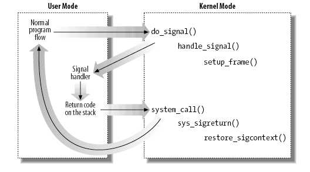

Linux Kernel: Signal
Table of Contents
1 Linux Kernel: Signal
1.1 Overview
信号 (signal) 是一个很短的消息, 发送者可以是 kernel 本身或某个进程, 接 收者可以是单个进程或一组进程(线程), 通常这个消息只会包含一个数字来标识 具体是哪个信号, 但新的 sigaction API 可以使 kernel 在消息中保存更多的更 多的内容, 例如发送者的 pid, uid 等.
传统的信号一个 31 个, 后来 POSIX 又引入了 real-time signal 的概念, real-time signal 使用的信号范围是 32 .. 64, 所以信号的总数不超过 64 个.
task_struct 中针对每个信号都有一个处理函数 (sa_handler)), 用户可以通过 signal 或 sigaction 来设置这个 sa_handler. sa_handler 可以是一段用户空 间的代码, 也可以是一些特殊值表示特殊的处理:
- SIG_DFL 表示处理这个信号采用 kernel 默认的处理函数
- SIG_IGN 表示忽略这个信号, 不做任何处理
用户进程 A 可以通过 kill, tkill, tgkill 三个系统调用向另一个进程 B "发 送" 一个特定的信号, 这个过程称为 signal generating, 其中:
- tkill 是仅仅向某个线程发送信号, 和线程所在的线程组 (thread group) 中的某它线程无关
- tgkill 功能和 tkill 是一样的…只不过它会在 tkill 基础上做一些检查
- kill 是向整个 thread group 发送信号, kernel 负责从 thread group 中 选择某个 thread 来响应这个信号, 另外, 如果这个信号是 fatal 的, 则 kernel 还会向 thread group 的所有线程发送 SIG_KILL 使得整个 thread group 都结束执行
B 进程事先可以通过 sigprocmask 将特定信息标记为 BLOCKED, A 进程发送过 来的信号会被记入 B 进程的 pending signal 列表中, 当 B 后面再次通过 sigprocmask 解除对这个信号的 block 时, B 会立即收到这个信号. 这一点与 SIG_IGN 是不同的: 如果某个信号的处理函数通过 sigal 或 sigaction 设置为 SIG_IGN, 则这个信号并不会进入 pending signal 列表中: 它会被直接丢弃
A 发送信号给 B 只是将信号记在 B 的 pending signal 中, B 真正响应这个信号 的时机是从 kernel mode 返回 user mode 时, 参考 ret_from_intr 中关于 work_pending 的描述. B 响应信号的过程称为 signal delivering
当 B 事先注册的 sa_handler 被调用时, 因为 sa_handler 是一段用户空间的 代码, 而 ret_from_intr 时还在 kernel mode, 所以 kernel 需要一种手段能 在 kernel mode 调用 user mode 的代码
1.2 数据结构
- p->pending 类型为 sigpending, 其中的 pending->signal 是一个 64 big 的 mask, 标识有哪个 pending 的信号. pending->list 是一个 sigqueue 的链表, sigqueue 描述了每一个 pending 的信号的具体信息
- p->signal 中的许多信息和 signal 的处理关系并不紧密, 例如 signal->rlim 是进程的 rlimit 信息, rlimit 中的大部分信息和信号没有 一点关系. p->signal->share_pending 和 p->pending 类似, 如果一个信号 是发给整个 thread group 的, 则需要使用 share_pending 做一些记录
- p->sighand 是针对每个信号的 sa_handler 信息, signal 和 sigaction 系 统调用会直接修改它的内容.
1.3 信号产生
根据信号的来源 (进程通过 kill 发起或 kernel 本身发起的), kernel 通过许多 函数来发送信号 (signal generating):
- 发送给单个线程
- sys_tkill
- sys_tgkill
- send_sig{_info}
- force_sig{_info}
- 发送给整个线程组
- send_group_sig_info
- kill_pg{_info}
- kill_proc{_info}
- sys_kill
不论上面提到的哪个函数, 最终都会调用到 specific_send_sig_info 或 group_send_sig_info
1.3.1 给单个线程发送信号
1.3.1.1 specific_send_sig_info
specific_send_sig_info(sig, info, t): if (sig_ignored(t, sig)): // task_struct->block 是一个 64 bit 的 mask, 标识哪些 sig 被 // block. 被 block 的 sig 不能被 ignore, 因为它们需要被放在 pending // signal 中以便 unblock 时进程能再次收到这个 sig if (sigismember(&t->blocked, sig)): return 0; // 若 t->sighand 中 sig 对应的 handler 为 SIG_IGN 或 handler 为 // SIG_DFL 但 sig 的默认 handler 也为 ignore, 则忽略这个 sig handler = t->sighand->action[sig-1].sa.sa_handler; return handler == SIG_IGN || (handler == SIG_DFL && sig_kernel_ignore(sig)); goto out; // 没有 ignore 的 sig 最终需在放在 t->pending 中, sigpending->signal 是 // 一个 bitmask, 标识 pending 列表中是否已经存在相同 sig 的 signal. // // 对于普通的 (非 real time) 的 signal, 对于同一个 sig, pending 列表中 // 最多只会保存一个对应的 signal, 即多个普通 signal 不会累积在 pending // 中. // // 但对于 real time signal, 多个 real time signal 是可以在 pending 中累 // 积的 if (LEGACY_QUEUE(&t->pending, sig)): (((sig) < SIGRTMIN) && sigismember(&(pending)->signal, (sig))) goto out; send_signal(sig, info, t, &t->pending); // 如果 sig 没有 block, 则唤醒进程以便它能及时响应这个 signal if (!ret && !sigismember(&t->blocked, sig)): signal_wake_up(t, sig == SIGKILL); // 设置 TIF_SIGPENDING, 以便 ret_from_intr 时能发现有 pending signal set_tsk_thread_flag(t, TIF_SIGPENDING); // 正常情况下只有处于 TASK_INTERRUPTIBLE 状态的进程才会被唤醒, 但若 // sig 为 SIG_KILL, 则 TASK_STOPPED 状态和 TASK_TRACED 状态的进程也 // 会被唤醒. // // 所以正在 sleep 或阻塞在 read 上的进程会被唤醒, 这也是 signal 导致系统调 // 用提前返回的原因. 另外, 处于 D 状态 (TASK_UNINTERRUPTIBLE) 的进 // 程不会被唤醒, 所以 D 状态的进程无法及时响应 signal mask = TASK_INTERRUPTIBLE; if (resume): mask |= TASK_STOPPED | TASK_TRACED; wake_up_state(t, mask)
1.3.1.2 send_signal
send_signal(sig, info, t, pending): // 分配一个 sigqueue, 后面需要将它插入 pending 链表中 q = __sigqueue_alloc(t, GFP_ATOMIC); list_add_tail(&q->list, &signals->list); switch ((unsigned long) info): // send_signal 时传入的 info (siginfo) 一般是由上层填充的, 包含 // signo, errno, code, pid, uid, addr 等数据. 然后 send_signal 时通过 // copy_siginfo 将 info 复制到 q->info 中. // // 但有时 kernel 有时会通过 force_sig, send_sig 发送一些信号, 而且这 // 些信号并不需要通过 siginfo 传递大部分信息, 为了避免 copy_siginfo, // kernel 使用特定的 0, 1 做为 info 并在这里进行特殊的处理. case 0: q->info.si_signo = sig; q->info.si_errno = 0; q->info.si_code = SI_USER; q->info.si_pid = current->pid; q->info.si_uid = current->uid; break; case 1: q->info.si_signo = sig; q->info.si_errno = 0; q->info.si_code = SI_KERNEL; q->info.si_pid = 0; q->info.si_uid = 0; break; default: copy_siginfo(&q->info, info); break; sigaddset(&pending->signal, sig);
1.3.2 给线程组发送信号
1.3.2.1 group_send_sig_info
group_send_sig_info: __group_send_sig_info(sig, info, p); // 同一个 thread group 的 t->signal 和 t->sighand 是共享的 (t->blocked // 和 t->pending 是单独的), 所以 sig_ignored 对 p 或者 p 这个线程组中 // 的所有线程都会返回相同的结果 if (sig_ignored(p, sig)): return ret; // sig 将被加入 p->shared_pending 而不是 t->pending if (LEGACY_QUEUE(&p->signal->shared_pending, sig)): return ret; // 与 specific_send_sig_info 相同, 只不过是加入到 p->shared_pending 而不 // 是 t->pending send_signal(sig, info, p, &p->signal->shared_pending); // 对于 specific_send_sig_info 来说, 这里会通过 signal_wake_up 唤 // 醒 p 来响应这个信号. 但对于 group_send_sig_info 来说, 这里会通 // 过__group_complete_signal 来选择 p 所在的 thread group 中的某一 // 个 "合适" 的线程来响应这个信号 __group_complete_signal(sig, p);
1.3.2.2 __group_complete_signal
// __group_complete_signal 的目的是从 p 所在的 thread group 中选择一个 // 线程来唤醒, 以响应之前已经加入到 p->shared_pending 中的信号 __group_complete_signal(sig, p): // wants_signal 用来检查 thread p 是否 "应该" 响应 sig, 响应 sig 的条件 // 为: // 1. sig 没有被 p block // 2. p->state 不是 mask 所指定的 state // 3. p 正占用着 cpu 或 p 没有任何 pending 信号 (p->pending 及 // p->shared_pending 为空) if (wants_signal(sig, p, mask)): #define wants_signal(sig, p, mask) \ (!sigismember(&(p)->blocked, sig) \ && !((p)->state & mask) \ && !((p)->flags & PF_EXITING) \ && (task_curr(p) || !signal_pending(p))) // 优先选择 kill syscall 最初指定的线程来响应信号 t = p; else: // 从 thread group 中选择一个 wants_signal 为真的 // p->signal->curr_target 记录了上次响应信号的 thread, 通过这个可以 // 在一定程度上实现信号处理的 load balancing t = p->signal->curr_target; if (t == NULL): t = p->signal->curr_target = p; // 遍历所有的 thread while (!wants_signal(sig, t, mask)): t = next_thread(t); // 没有任何一个 thread wants_signal, 那这里无法唤醒任何线程: 只能等 // 着某个线程 "自然" 唤醒后来处理这个信号了 if (t == p->signal->curr_target) return; p->signal->curr_target = t; if (sig_fatal(p, sig) ....): // 如果是 fatal 信号, 直接 kill 掉 thread group 中所有线程, 这一点 // 与 get_signal_to_deliver 里的逻辑差不多 ... // 最后, 唤醒 t 来响应这个信号 signal_wake_up(t, sig == SIGKILL);
1.3.3 举例
1.3.3.1 应用发起的 kill
sys_kill(int pid, int sig): struct siginfo info; info.si_signo = sig; info.si_errno = 0; info.si_code = SI_USER; info.si_pid = current->tgid; info.si_uid = current->uid; kill_something_info(sig, &info, pid); // 若 pid 为 0, 则表示要给当前进程所在进程组的所有进程发送信号. 关于进 // 程组, 参考 [[file:process.org::*Processes%20Relationship][Processes Relationship]] if (!pid): return kill_pg_info(sig, info, process_group(current)); // pg 是指 process group, 即进程组 do_each_task_pid(pgrp, PIDTYPE_PGID, p) { group_send_sig_info(sig, info, p); } while_each_task_pid(pgrp, PIDTYPE_PGID, p); // 若 pid 为负数, 则给 -pid 所指示的进程组的每个进程发送信号 else if (pid < 0): return kill_pg_info(sig, info, -pid); // 给 pid 指示的进程发送信号 else: return kill_proc_info(sig, info, pid); p = find_task_by_pid(pid); group_send_sig_info(sig, info, p);
1.3.3.2 page fault 导致的 SIGSEGV
do_page_fault: info.si_signo = SIGSEGV; info.si_errno = 0; info.si_addr = (void __user *)address; force_sig_info(SIGSEGV, &info, tsk); // 若 sig 被 blocked, 则 force_sig_info 强制把它 unblock; 若 // sa_handler 被修改为 SIG_IGN, 则 force_sig_info 会强制把 // sa_handler 变为 SIG_DFL... // // 所以看起来应用把 sa_handler 写成一个空函数和直接设置为 SIG_IGN 还是 // 有些差别的 if (sigismember(&t->blocked, sig) || t->sighand->action[sig-1].sa.sa_handler == SIG_IGN): t->sighand->action[sig-1].sa.sa_handler = SIG_DFL; sigdelset(&t->blocked, sig); recalc_sigpending_tsk(t); specific_send_sig_info(sig, info, t);
1.4 信号传递
信号传递 (signal delivering) 是指 pending 信号对应的 sa_handler 真正被 执行的过程. 一般情况下, 中断处理的 resume_userspace 会检查是否有需要处 理的信号(resume_kernel 并不会做这种检查)
resume_userspace 被调用可以分为两种情况:
- 中断或 syscall 正常完成, 调用 resume_userspace
- syscall 阻塞, 但被信号唤醒 (通过 signal_wake_up), 从而调用 resume_userspace
其中后者是 kernel 处理 "syscall 被中断并重启" 问题的关键.
resume_userspace: movl TI_flags(%ebp), %ecx andl $_TIF_WORK_MASK, %ecx jne work_pending work_pending: testb $_TIF_NEED_RESCHED, %cl jz work_notifysig work_notifysig: call do_notify_resume // signal_wake_up 时会置位. // // 另外更一般的情况下, kernel 每次对 pending 的改变后都会调用 // recalc_sigpending_tsk 根据 pending->signal 来对 TIF_SIGPENDING 置位 // 或复位 if (thread_info_flags & _TIF_SIGPENDING): do_signal(regs,oldset);
1.4.1 do_signal
do_signal 是信号处理最主要的部分, 它需要完成信号处理中最复杂的部分: 在 kernel space 调用 user space 下的 sa_handler
do_signal: signr = get_signal_to_deliver(&info, &ka, regs, NULL); if (signr > 0): handle_signal(signr, &info, &ka, oldset, regs); return 1
1.4.1.1 get_signal_to_deliver
找一个 pending 的 signal, 并交给 handle_signal 去处理. 如果 pending signal 对应的 handler 是 SIG_DFL, 则执行默认的操作: ignore, coredump 或 exit
get_signal_to_deliver: sigset_t *mask = ¤t->blocked; signr = dequeue_signal(current, mask, info); int signr = __dequeue_signal(&tsk->pending, mask, info); // 从 pending->signal 这个 bitmask 找到 mask 之外的第一个 pending // 的 signr sig = next_signal(pending, mask); // 从 pending 列表中找到对应于 sig 的 siginfo collect_signal(sig, pending, info) // 若 pending 中没有, 则查找 shared_pending. group_send_sig_info 时 // 会将信号加入到 shared_pending 中 if (!signr): signr = __dequeue_signal(&tsk->signal->shared_pending, mask, info); // 没有任何 pending signal if (!signr): break; // 找到一个 pending signal ka = ¤t->sighand->action[signr-1]; if (ka->sa.sa_handler == SIG_IGN): continue; if (ka->sa.sa_handler != SIG_DFL): // 找到一个有 sa_handler 的信号, 返回到上层, 后续会调用 handle_signal // 来处理它 *return_ka = *ka; if (ka->sa.sa_flags & SA_ONESHOT): ka->sa.sa_handler = SIG_DFL; break; // 前两个判断都不满足, 走 SIG_DFL 的处理路径 if (sig_kernel_ignore(signr)): continue; if (current->pid == 1): continue; // sig 是 SIGSTOP 一类的信号 if (sig_kernel_stop(signr)): do_signal_stop(signr) continue // 剩下的全是 fatal 信号 if (sig_kernel_coredump(signr)): // 需要生成 coredump do_coredump((long)signr, signr, regs); // 对于 fatal 信号, 不仅仅是当前线程退出, 而是整个 thread group 中的所 // 有线程都会退出 do_group_exit(signr); zap_other_threads(current); for (t = next_thread(p); t != p; t = next_thread(t)): // 相当于给其它每个子线程都发送一个 SIGKILL sigaddset(&t->pending.signal, SIGKILL); rm_from_queue(SIG_KERNEL_STOP_MASK, &t->pending); signal_wake_up(t, 1); // do_exit 不会返回, 所以后面的 handle_signal 并不会执行 do_exit(exit_code);
1.4.1.2 handle_signal
handle_signal(sig, info, ka, ...): // 最初应用通过 sigaction 时使用了 SA_SIGINFO 这个 flag, 表示上层的 // handler 执行时需要拿到 siginfo 信息, kernel 需要调用 sigaction 时注 // 册的 sa_sigaction 回调, 而不是 sa_handler. // // sa_sigaction 回调的原型为: // // void (sa_action *) (int signr, siginfo_t * info, void *) if (ka->sa.sa_flags & SA_SIGINFO): setup_rt_frame(sig, ka, info, oldset, regs); else: setup_frame(sig, ka, oldset, regs);
1.4.1.3 setup_frame

setup_frame: struct sigframe __user *frame; frame = get_sigframe(ka, regs, sizeof(*frame)); // 在 user mode stack 上向下扩展出一块区域, 存放 sigframe esp = regs->esp; return (void __user *)((esp - frame_size) & -8ul); __put_user(sig, &frame->sig); setup_sigcontext(&frame->sc, &frame->fpstate, regs, set->sig[0]); // 将 regs 中原始内容保存在 sigframe 的 sigcontext 中, 因为后面 regs // 中的内容会被替换为 sa_handler 对应的部分 __put_user(regs->edi, &sc->edi); __put_user(regs->esi, &sc->esi); __put_user(regs->ebp, &sc->ebp); __put_user(regs->esp, &sc->esp); __put_user(regs->ebx, &sc->ebx); __put_user(regs->edx, &sc->edx); __put_user(regs->ecx, &sc->ecx); __put_user(regs->eax, &sc->eax); __put_user(regs->eip, &sc->eip); __put_user(regs->xcs, (unsigned int __user *)&sc->cs); __put_user(regs->eflags, &sc->eflags); __put_user(regs->esp, &sc->esp_at_signal); restorer = &__kernel_sigreturn; __put_user(restorer, &frame->pretcode); // 这里对 regs 重新赋值, 当 do_signal 返回后 iret 会负责用 regs 恢复 // user space 的上下文, 导致 user space 会跳转到 sa_handler, 并且参数为 // sig, esp 为 frame. // // 所以, sa_handler 在 user mode 执行时 stack 的布局 (从高到低) 为: // // .. // sigcontext // sig // pretcode (__kernel_sigreturn) <-- esp // // 因为 x86 默认使用栈来传递参数, 所以 sa_handler 执行时第一个参数 signr // 与栈上的 sig 是对应的 // 这里对 regs 重新赋值, 当 do_signal 返回后 // iret 会负责用 regs 恢复 user space 的上下文, 导致 user space 会跳转到 // sa_handler, 并且参数为 sig, esp 为 frame. // // 所以, 参考 sigframe 的定义, sa_handler 在 user mode 执行时 stack 的 // 布局 (从高到低) 为: // // --high // .. // sigcontext // sig // pretcode (__kernel_sigreturn) <-- esp // --low // regs->esp = (unsigned long) frame; regs->eip = (unsigned long) ka->sa.sa_handler; // x86 默认使用栈来传递参数, 这里并不明确设置 eax 的目的... regs->eax = (unsigned long) sig; regs->edx = (unsigned long) 0; regs->ecx = (unsigned long) 0; regs->xcs = __USER_CS;
setup_rt_frame 和 setup_frame 基本相同, 只不过它会在栈上额外设置一个 siginfo 的指针.
1.4.1.4 __kernel_sigreturn
sa_handler 执行结束后, 按照 c 默认的调用约定和前面描述的栈布局, 会跳转 到 __kernel_sigreturn 函数, __kernel_sigreturn 函数是保存在 vsyscall page 中的一个函数, 所以应用可以直接访问, 关于 vsyscall page, 参考
通过将 vsyscall page dump 到本地并反汇编, 能看到 __kernel_sigreturn 的代 码如下:
pop %eax mov $0x77,%eax int $0x80
可见它会调用 sys_sigreturn 这个系统调用
显然 sys_sigreturn 需要完成以下的任务: 从 sigframe->sc 中恢复旧的 regs 以便 user mode 能返回到被 sa_handler 打断的位置.
sys_sigreturn: // 为什么是 regs->esp - 8? // 根据前面描述的 sa_handler 的栈布局: // // --high // sigcontext // sig // pretcode (__kernel_sigreturn) <-- esp // --low // // 当 sa_handler 结束时调用 ret 之前, esp 是指向 __kernel_sigreturn 的, // 也就是 sigframe. ret 指令会导致 esp + 4, 然后 __kernel_sigreturn 的 // 第一句是 pop %eax, 导致 esp 再次 + 4, 此后通过 int 0x80 进入 syscall // 导致当前的 esp 已经偏离 sigframe 8 字节, 所以这里需要 -8 ... 至于 // __kernel_sigreturn 为啥会 pop %eax 不清楚... // // 对应于 sys_rt_sigreturn 的 __kernel_rt_sigreturn 并没有这个 pop 操 // 作, 所以 sys_rt_sigreturn 获得 sigframe 时只需要 - 4 struct sigframe __user *frame = (struct sigframe __user *)(regs->esp - 8); // 使用 frame->sc 恢复旧的 regs restore_sigcontext(regs, &frame->sc, &eax)
1.4.1.5 观察 sigframe
测试程序:
#include <signal.h> void * foo(int signr) { } int main(int argc, char *argv[]) { signal(10, foo); sleep(1000); return 0; }
使用 gdb 分析的过程:
$> gcc -O0 -g test.c -m32
$> gdb ./a.out
(gdb) b main
(gdb) b foo
(gdb) r
Starting program: /home/sunway/a.out
Breakpoint 1, main (argc=1, argv=0xffffc454) at test.c:8
8 signal(10, foo);
(gdb) n
9 sleep(1000);
(gdb) n
# 在这里使用 kill -10 <pid> 给 a.out 发送一个信号, 导致 sleep 系统调用
# 被打断而提前返回, 但这里的 "提前返回" 并不是指此时控制已经返回到
# sleep 之后的代码 (0xf7fd8d49), 因为在返回 sleep 之后的代码前,
# sa_handler 需要先被执行
Program received signal SIGUSR1, User defined signal 1.
0xf7fd8d49 in __kernel_vsyscall ()
(gdb) n
Single stepping until exit from function __kernel_vsyscall,
which has no line number information.
foo (signr=10) at test.c:3
3 void * foo(int signr) {
(gdb) x /20x $esp
0xffffbd6c: 0xf7fd8d20 0x0000000a 0x00000063 0x00000000
0xffffbd7c: 0x0000002b 0x0000002b 0xffffc368 0xf7fd4240
0xffffbd8c: 0x00000000 0xffffc32c 0xffffc368 0x7fffffff
0xffffbd9c: 0xffffc368 0xfffffffc 0x00000001 0x00000000
0xffffbdac: 0xf7fd8d49 0x00000023 0x00000246 0xffffc32c
# 按照 setup_frame 设定的栈布局:
#
# 1. 栈顶的 0xf7fd8d20 即是位于 vsyscall page 的 __kernel_sigreturn
# 2. 0x0000000a 是 signr
# 3. 从 0x00000063 开始后面对应的数据是 sigcontext 中的内容, 其中
# 0xffffbdac 处保存的 0xf7fd8d49 对应于 sigcontext->eip, 它和前面
# sleep 被提前打断时显示的 eip 是一致的, 都对应于 __kernel_vsyscall
(gdb) disass 0xf7fd8d20
Dump of assembler code for function __kernel_sigreturn:
0xf7fd8d20 <+0>: pop %eax
0xf7fd8d21 <+1>: mov $0x77,%eax
0xf7fd8d26 <+6>: int $0x80
0xf7fd8d28 <+8>: nop
End of assembler dump.
(gdb) disass 0xf7fd8d49
Dump of assembler code for function __kernel_vsyscall:
0xf7fd8d40 <+0>: push %ecx
0xf7fd8d41 <+1>: push %edx
0xf7fd8d42 <+2>: push %ebp
0xf7fd8d43 <+3>: mov %esp,%ebp
0xf7fd8d45 <+5>: sysenter
// 这里的 int $0x80 是什么意思? 和
// [[file:process.org::*sysenter,%20syscall,%20vsyscall][sysenter,
// syscall, vsyscall]] 中 dump 的 __kernel_vsyscall 不一样...
0xf7fd8d47 <+7>: int $0x80
0xf7fd8d49 <+9>: pop %ebp
0xf7fd8d4a <+10>: pop %edx
0xf7fd8d4b <+11>: pop %ecx
0xf7fd8d4c <+12>: ret
End of assembler dump.
1.4.1.6 sigaltstack
一般情况下 sigframe 都是在 user stack, 但由于 user stack 一般较小, 若 user stack 已满怎么办?
可以通过 sigaltstack 通知 kernel 在另一块区域上建立 sigframe, 凡是 sa_flags 中包含 SA_ONSTACK 的 signal 都会使用 altstack (alternative stack)
1.5 相关的系统调用
1.5.1 kill, tkill, tgkill
1.5.2 signal, sigaction
1.5.3 sigsuspend
1.5.4 sigpending
1.5.5 sigprocmask
1.6 Appendix
1.6.1 系统调用的中断与重启
https://github.com/mozilla/rr/wiki/Linux-signals
有一些系统调用会导致 kernel 进入 TASK_INTERRUPTIBLE 状态, 例如:
- nanosleep
- 针对 pipe 的 read, write
- wait 类的调用
但发生信号时, kernel 会通过 signal_wake_up 强制将处理 TASK_INTERRUPTIBLE 状态的进程唤醒, 但此时它们等待的事件并没有完成, 却 直接走到了之前造成阻塞的指令的下一条指令, 即结果 syscall 就被打断了.
以 pipe read 为例:
用户发起 pipe read 并被信号打断
pipe_readv: for (;;): // pipe 的 read 操作阻塞, 等待 writer 向 pipe 写数据 PIPE_WAITING_WRITERS(*inode) // 假设阻塞过程中有信号发生, 当前进程被唤醒, 则 PIPE_WAITING_WRITERS // 会直接返回, 执行下一条指令 (signal_pending) // // signal_pending 为真, 说明当前进程有 pending signal, 则说明是信号唤 // 醒了当前进程, 则 syscall 提前返回 -ERESTARTSYS // // 由于 syscall 返回后 (但在调用 do_signal 之前) 会将返回值 (eax) 放 // 在 pt_regs 中, 后续 do_signal 可以根据 pt_regs->eax 知道被打断的 // syscall 关于重启的意图: 返回 EINTR 由上层重启 syscall, 或由 kernel // 直接通过设置 ip 自动重启 syscall if (signal_pending(current)): ret = -ERESTARTSYS; break;
handle_signal
handle_signal: // 当前是一个 syscall if (regs->orig_eax >= 0): switch (regs->eax): // 若被打断的 syscall 返回 ERESTART_RESTARTBLOCK 或 ERESTARTNOHAND, // 则直接对上层返回 EINTR, 由上层决定是否重启 syscall // // 若 syscall 返回 ERESTARTSYS, 则根据 sigaction 是否指定了 // SA_RESTART 决定是返回 EINTR 还是通过修改 eip 和 eax 直接由 // kernel 来重启 syscall case -ERESTART_RESTARTBLOCK: case -ERESTARTNOHAND: regs->eax = -EINTR; break; case -ERESTARTSYS: if (!(ka->sa.sa_flags & SA_RESTART)): regs->eax = -EINTR; break; /* fallthrough */ case -ERESTARTNOINTR: regs->eax = regs->orig_eax; // 不论 int 0x80 或 sysenter, 指令长度都是 2 bytes regs->eip -= 2; // ... setup_frame
编程时需要考虑 syscall 被信号打断的情况时, 一般使用如下的代码:
do { rc = (int)the_sys_call(); } while(rc < 0 && errno == EINTR);
1.6.2 信号与 longjmp
#include <setjmp.h> jmp_buf buff; void foo(int sig) { printf("foo\n"); longjmp(buff, 1); } int main(int argc, char *argv[]) { int x = setjmp(buff); signal(11, foo); printf("hello %d\n", x); sleep(20); return 0; }
由于 longjmp 不会返回, 所以栈上的 __kernel_sigreturn 并不会被调用, 所 以 longjmp 后不会再返回到被信号打断的位置.
1.6.3 信号与线程
通过 fork 时的 copy_process 代码, 可以看到:
- p->sighand 是共享的, 任何一个线程里修改了 sighand 都会影响到其它线程
- p->blocked 在各个线程中是独立的, 所以 sigprocmask 只会影响当前的线程
- p->pending 是独立的
- p->shared_pending 是共享的